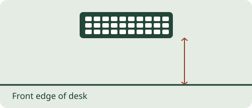

Accessible typing
Typing Setup Lab
Exploring accessible solutions through practical, person-centred design.
Use your usual arrangement for Setup A. For Setup B, change just one thing that feels comfortable and safe. Use the same input method and message for both trials. Start and finish at your own pace.
1. Choose a setup
Setup A is your usual arrangement. Setup B changes one thing. The drawings show one physical adjustment. Use your own comfortable position.

In this example, the keyboard sits farther from the front edge.

The same keyboard slides closer without changing its angle.
Before you begin
Setup B can use a different keyboard position, comfortable forearm support, an existing fitted keyguard, or an accessibility setting on your device. Make any physical or device-setting changes yourself before starting. Do not add or adjust equipment that has not been fitted for you.
Read the steps, then try the same sample message for both setups: meet me at noon. Rest, restart, or leave at any time.
- Try both setups
- Compare
- Save if you want
Prefer untimed, unscored practice?
Change Sticky Keys on your device
On Windows, open Settings → Accessibility → Keyboard → Sticky keys. On Mac, open System Settings → Accessibility → Keyboard → Sticky Keys. You control this setting on your device. The lowercase sample uses no modifier shortcuts, so it cannot evaluate Sticky Keys for shortcut use.
Windows accessibility instructions · Mac accessibility instructions
Showing usual keyboard without a keyguard.
What the activity looks like
This simplified, static diagram is available if video or interactive media is unavailable.
Read the demonstration steps
- Choose an arrangement you already use comfortably.
- Type the sample message using the keyboard or the on-screen keys.
- Finish or discard the trial. Make one change for Setup B and try the same message.
2. Perform the task
Sample for every trial meet me at noon
Select Start trial, type the sample exactly as shown, then select Finish trial. There is no time limit. You can pause to rest or discard the trial.
On-screen keyboard
3. Compare your trials
Compare trials with the same device, input method, and on-screen key position. Learning, fatigue, familiarity, device differences, and setup order can affect results. Try both orders if you repeat the comparison.
How scoring works
- Elapsed time runs from Start trial to Finish trial, excluding explicit pauses. It includes time spent reaching the controls.
- Final text errors are the minimum character insertions, deletions, and substitutions needed to match the sample. Capitalisation and spaces count.
- Correction actions count observed deletions and selected-text replacements. The count is approximate and cannot tell whether an edit fixed an error.
- These results describe one typing task. Clinical change and medical effectiveness require separate evaluation.